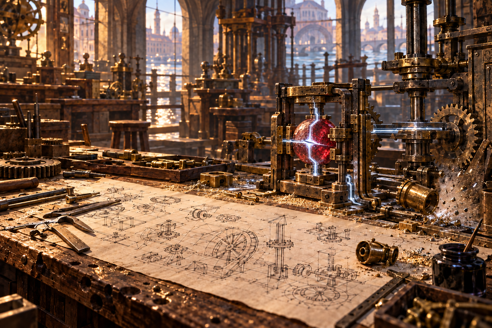

Not Another Isekai
Pain came first.
Something hard cracked against the back of Daniel’s head. His eyes snapped open to a scarred wooden workbench filling his vision, its dark grain cut with old tool marks and dusted with brass filings. The rough grain pressed into his palms as he caught himself and watched a small brass piece skitter away beneath a stack of papers.
“Up.”
The voice was low, rough, and much too close.
Daniel stayed braced over the bench while the room assembled itself around him. Hot metal and lamp oil mingled with the damp smell of stone; a file rasped nearby. Afternoon light slanted through high windows and flashed along hanging tools. Below the floor, canal machinery struck a slow, repeating beat. A sharp, throbbing pulse spread from the base of his skull.
I have no idea where I am.
That conclusion came quickly. Panic followed a moment later—a feeling familiar enough that he knew how to set it aside and begin taking stock.
He was seated. He was breathing. He could move both hands. No blood that he could feel. His hearing worked, though the right side of the room seemed determined to ring.
These are not my hands.
They were leaner than he remembered, their knuckles marked by small burns and old cuts. A pale lock of hair hung across his vision. When he jerked upright, it swung with him.
Is that blonde hair? My hair is brown.
A broad hand came down on the workbench. It belonged to a compact, solidly built man with iron-gray hair, heavy brows, and the sort of scarred fingers that made every tool nearby look fragile. He held what looked like a large wooden ruler in the other hand.
So that was what I was hit with.
The detail was absurd enough to steady him.
“Lucan,” the man said. “If your work interests you so little that you can sleep on it, perhaps the canal mud will prove more stimulating.”
The words sounded foreign, yet he understood them with the effortless fluency of a native speaker. The name struck something inside Daniel harder than the ruler had.
He thinks my name is Lucan.
The face belonged to a stranger, yet Daniel recognized it. Severan Corvane.
A vivid memory surfaced without warning: the wooden ruler tapping the edge of another diagram, Severan’s voice correcting a fault in the drawing, brass filings glittering between the inked lines. Then it vanished, leaving the name and nothing Daniel could question.
Daniel stared at him.
Severan’s eyes narrowed. “Have I broken something?”
“No,” Daniel said.
The voice that came out was not his. It was younger, lighter, and entirely unfamiliar.
He amended his list.
None of this is mine. He thinks I am someone named Lucan.
Across the workshop, a tall woman with dark auburn hair looked up from a timber housing. Her chisels, gauges, and files were arranged in precise rows across her bench.
Sabine Arvello.
A man beside a wall of shallow drawers paused with a coil of copper-colored strip in his hands. Dark curls, sturdy build, open expression.
Nerio Vale.
The names came easily. Everything behind them remained locked.
Nerio tilted his head. “You did hit him rather hard.” The humor in his voice did not hide the concern.
“I have hit him harder with instructions,” Severan said. “They left less of an impression.”
Sabine’s mouth shifted by perhaps a millimeter. That appeared to be the workshop’s current allowance for humor.
Daniel looked down.
Thick paper covered the scarred bench. Inked lines showed a paddle wheel, a vertical shaft, and unfamiliar assemblies. Brass filings glittered beside a black ink pot, while the fallen brass piece lay near an empty fitting. Beyond the drawing, a cloudy red sphere rested within a broad frame of brass and blackened steel. Heavy clamps reached inward to hold it, and pale blue-white lines ran over its surface and outward through the surrounding mechanism.
No. I know what that is.
I am looking at a harvested mana core.

The cloudy sphere pulled a vivid memory into focus: pale mana flaring from a break in one of those channels. The break was too clean, too deliberate—a line cut across the carving rather than a fracture. Severan swept Lucan’s hand away as metal struck the containment wall hard enough to shake the bench. The memory ended before Daniel understood what had failed.
I do not know how any of this works. I know only that guessing could kill someone.
He knew what the gears would do. Before waking in Lucan’s body, Daniel had made his living as a mechanical engineer. The shaft and gearing made immediate sense: the paddle wheel drove the assembly through a reduction stage. The core’s etched channels fed into a regulator.
The mechanical system was intelligible. The magical one might as well have been a sealed black box stamped with a single warning: do not guess.
His heart beat faster, but the feeling was familiar—one years of experience had taught him to contain.
Severan followed his gaze. “Well?”
Daniel’s own answer rose first. He held it back, trying to imagine what the people watching him expected from Lucan.
“I lost my place.”
Sabine set down her file with deliberate care.
“You fell asleep at an active bench,” she said. “That is not losing your place. It is a safety failure.”
Nerio set down the coil. “He’s awake now, Sabine. Give him a moment to find his feet.”
A smear of ink crossed the diagram where his cheek must have rested.
I was dozing. Severan struck me for it.
I know what the blow explains. It explains nothing that matters.
“Stand,” Severan said.
Daniel obeyed. The motion nearly betrayed him. His center of gravity was lower than expected, his shoulders broader, his legs more responsive. He caught the bench, but Severan saw the sway.
Severan gripped Daniel’s chin and turned his face into the nearest sunbeam. Dust drifted between them while the master checked his eyes and scalp without gentleness.
“Eyes clear. No bleeding. Can you count?”
“Yes.”
“An improvement already.”
Nerio coughed into his fist.
Severan released him. “Then count the failures in your proposed regulator before the city pays us to discover them underwater.”
He pushed the diagram back across the bench.
Daniel looked at it properly.
The more he studied it, the less the design resembled a finished plan. Unmarked revisions crossed one another, and precise dimensions gave way without warning to estimates. A valve lacked a visible relief path if it jammed. The core cradle lay close enough to the transmission shaft that a failed bearing could take both with it.
Those risks he understood. Whether the etched channels mitigated or compounded them was beyond him.
“At least three potential mechanical failures,” Daniel said. “More if those channels respond to heat.”
Silence.
He saw that Sabine and Nerio were watching him more closely.
Severan’s brows lowered. “They do.”
“Then there are more,” Daniel said.
“How many?”
“I don’t know yet.”
Severan’s mouth tightened as Sabine’s stare sharpened. Nerio had turned fully from his work and was watching Daniel now.
I won’t guess just to sound like whoever this Lucan is.
Severan studied Daniel. “You usually answer before I finish asking.”
“I can guess now,” Daniel said, “or check the channel layout and whatever test records you keep for the core.”
“The recorded assessment,” Severan corrected.
He tapped the ruler once against his palm. “Sit. Stay awake. Check them both. Until then, you do not touch the core or its channels.”
Daniel sat.
For the next several hours, Daniel settled into the deliberate rhythm of his old work and refused to move faster than his understanding.
He separated what he knew from what he did not, then broke each unknown into a question. The drawings and half-built mechanisms allowed him to construct a rough model. A mana core supplied power where an Earth machine would have required an engine or electric motor. Carved channels carried that power into the mechanism, while removable regulating plates divided or restricted the flow. He did not yet understand the rules, but he could see the danger. A bad carving could stop one part, overload another, or send mana where it could do real damage.
Once he knew what to check next, Daniel allowed himself to study the workshop around him. The open bays held tools and routine repairs beneath smoke-darkened beams; the canal showed through tall shuttered doors. Farther back, the benches thinned, the doors grew heavier, and cleared floor surrounded shielded test stands.
Daniel looked from a stripped floodgate mechanism to a sediment-scored pump and recognized their purposes almost at once. Warming plates, cooling chests, lamps, and weapon fittings crowded the smaller benches. But a nest of brass rings around an empty core socket told him nothing, nor did a sealed ceramic cylinder without controls. Artificing plainly extended far beyond the civic project before him.
A hammer rang above the steady rasp of files. From below, water knocked against the foundations. Severan stopped beside Sabine and Nerio only long enough to correct them. Daniel received nothing but suspicious silence.
Daniel kept his attention on the regulator plan.
“You drew it yesterday,” Sabine said without looking up. “Find the bypass, check it against the pressure line, and do not mark anything you have not verified.”
Sabine’s instruction pulled Daniel into a vivid memory. Unfinished lines crossed the drawing beneath Lucan’s hand. The test lever was already halfway forward when Sabine’s grip locked around his wrist. The regulator gave a thin, rising whine. Severan’s ruler cracked against the bench.
“Again.”
The workshop returned in the scrape of Sabine’s file. Daniel’s fingers were cold.
He marked the bypass. “Thank you.”
Sabine finally looked at him. “You are thanking me for stopping you from guessing?”
“For the correction.”
“I would prefer not to make it twice.”
Sabine’s lips twitched toward a smile. “Reasonable.”
Later, Nerio set three regulating plates within reach, safely clear of the red core. “Take your time. Which one?”
Daniel studied the plates without touching. Grooves radiated across the first like spokes. Those on the second divided and divided again, while the last tightened into a spiral his eyes resisted following.
He did not understand mana, but the underlying problem was familiar. Power had to leave its source and reach the parts that used it without damaging anything along the way. On Earth, wires, pipes, and valves had carried and controlled that flow. As Nerio turned the branching plate, Daniel traced its grooves from one path into several. Whatever mana was, it still had to be guided. The spiral remained unreadable.
“The branching one,” Daniel said. “It divides the flow.”
“And for this core?”
Daniel looked at the cloudy red surface in its cradle. “I don’t know.”
Surprise crossed Nerio’s face. He turned the plate over and tapped two tiny notches beside the rim. “Start with the core rating. Those marks tell you what the plate was cut to tolerate.”
Apparently, Lucan would rather guess than admit he did not know.
“I’ll check,” Daniel added.
By the end of the shift, he could frame the problem.
As the last light turned the high windows amber, Severan dismissed Sabine and Nerio and stopped Daniel at the door. He pressed the stained regulator drawing into his hands.
“Redo it.”
Daniel waited.
Severan’s gaze hardened. “Since when do you wait?”
“Since I realized haste might be part of the problem.”
Severan handed him two more sheets. “Identify every failure path you can justify. Separate knowledge from assumptions. Order the tests so they risk neither the core, the mechanism, nor anyone nearby. Have it on my bench before work begins tomorrow.”
That is, at last, a language I understand.
Outside, Nerio caught up with him along the workshop’s stone arcade.
“Before you go,” Nerio said, “I need to know whether you can get home safely.”
Sabine passed them without slowing. “He can walk. What he should not do is touch another tool until that assignment is finished.”
Daniel said nothing. The silence made Nerio hesitate, as though he had expected Lucan to answer with one of his reckless jokes.
“You all right?”
Not in any way I can explain.
“My head hurts.”
That, at least, was true.
Nerio nodded once. “Go home, then. I’ll finish closing the test bay. Keep to the streets, and sit down if the dizziness worsens—preferably before you reach a canal.”
The way home should have been impossible.
Instead, recognition stopped at the next corner.
A narrow street led away from Corvane’s workshop and the lock complex, squeezed between vaulted warehouses whose open bays smelled of damp rope, sawn timber, grain dust, and river mud. Daniel knew the left turn only when he reached it, and the stone bridge only when his boot touched it. Beyond, a market arcade hung with striped awnings around a fountain court where three lanes met. Nothing showed him what waited past it.
Varenza. The name came easily; the rest Daniel could see.
From the bridge, Daniel could see the Velis descending from the mountains, carrying Great Lakeheart’s clear water into Varenza. Within the city, locks divided its flow among narrow canals. Barges pressed toward mills and warehouses while smaller channels slipped between red-tiled homes and courtyards. Corvane’s workshop lay behind him near one of the principal locks. The next familiar turn led toward older, higher ground.
A city built to control water rather than decorate it.
Clear green water pressed against the lock gates and vibrated through the stone. Mineral lines marked old floods above the present flow; crews cleared silt from an overflow basin. A core-lit lifting frame hauled a dripping basket onto the quay while ropes strained and two workers steadied the load by hand.
I can see that magic assists the work. It has not abolished it.
Beyond the bridge, pale limestone facades rose from brick foundations to red-tiled roofs. Arcades shaded shopfronts and mosaic thresholds. On the lowest plots, doorways began above broad stone platforms, and hairline cracks marked where the waterlogged ground had settled. The soundest buildings stood true. The city had been built by people who understood how quickly water punished neglect.
Merchants bargained in the shade of the colonnades while neighbors traded news across the water from balconies crowded with cloth and herb pots. Twice people greeted Lucan by name. A canal worker saluted; an older fruit seller asked after Tessa without waiting for more than Daniel’s cautious nod. In Varenza, family reputation traveled faster than any boat.
Farther on, a public fountain spilled into a basin tiled blue and green. Children trailed their fingers through the overflow while merchants packed the stalls. Its steady pressure did not match the nearest canal’s elevation. A core-powered pump, then, with an intake below the quay. The intake would clog unless someone had designed for weeds and silt—and left a way to reach it—
Sunlight flashed from the water.
In an instant, the canal became a wall of white.
Daniel found himself back in the crowded reception hall, in the last moments of the life he had known.
It came with the dry chill of conditioned air and the ache of an evening he had attended only because declining would have required more explanation than appearing.
At thirty-two, he had come straight from work to a hotel reception, still wearing the dark jacket he kept for events he could not avoid. Amber lights glowed above polished floors. Music and conversation folded into a soft, expensive roar. Servers moved between groups with bright glasses on black trays, and the city beyond the windows glittered without revealing a single star.
He had checked his phone twice in five minutes when someone stopped beside him. Claire Bennett stood in the warm light with the controlled grace of someone accustomed to being watched, her posture perfect without looking rigid and her expression composed for the room. Her black hair and dark brows stood in sharp contrast to her fair skin. Her brown eyes remained calmly attentive to the room, while her mouth rested in a line more reserved than stern. The clean lines of her dress revealed the lean strength in her shoulders and arms. Daniel knew that strength came from an exceptional athletic history in gymnastics and fencing, followed by a career in dance. Even standing still, she carried herself with the grace of an athlete at the peak of physical mastery. Then quiet amusement softened her eyes and curved her mouth, and the polished public version of her became simply Claire. Their conversations had a habit of resuming where the last one had ended, as though the months between them were an interruption neither needed to explain.
“There’s my lifesaver.”
“Glad to see you’re doing well.”
The nickname came from their previous meeting, more than a year earlier, when Daniel had found Claire stranded beside a stalled car and stopped to help. He had traced the fault under the hood and gotten the engine running again. The repair had been ordinary to him; her relief had made it memorable.
She had thanked him beside the idling car with the same lightly amused warmth she wore now. With Claire, ordinary words settled easily; they stood at the reception’s edge while laughter threaded through the music and glasses chimed on passing trays.
Then the amber lights gave way to something brighter.
White flooded the windows, the polished floor, the moving crowd. Voices broke into startled cries. Daniel’s eyes moved toward Claire through the glare and met hers.
The crowd blurred into pale silhouettes and vanished. Claire remained for one suspended heartbeat, her face the only shape left in the world, before the white swallowed her too.
Then pain. A wooden ruler. A stranger’s blond hair falling across his eyes.